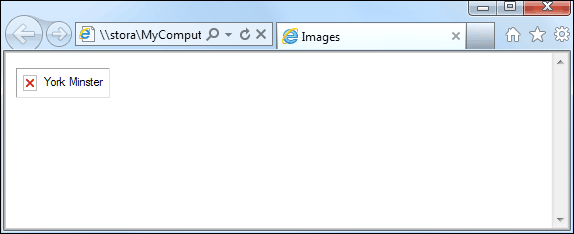

Image Attributes
When you use IMG you are using a HTML tag. The SRC part is called an attribute. There are lots of other attributes you can add to the IMG tag. Here are the image attributes in HTML 5:
ALT
SRC
HEIGHT
WIDTH
USEMAP
ISMAP
In previous versions of HTML, you also had these:
ALIGN
BORDER
HSPACE
VSPACE
However, these have now been deprecated (no longer valid). You can still use them, though. But the HTML 5 way is to apply these with CSS. You'll see how to do that shortly.
The ALT Attribute
The first attribute is ALT. You use it like this:
<IMG SRC="york_images/york_minster.jpg" ALT="York Minster">
ALT means "alternative text". If the image does not display then users will see the text between the double quotes of ALT. Try it out. Change your HTML code to this:
<IMG SRC="york_images/york_min.jpg" ALT="York Minster">
Here, we've changed the name of the image. Now save your work and refresh your page in the browser. You should see this (Internet Explorer):

Internet Explorer has added the ALT text after the red X.
You should always add some ALT text to your IMG tags as it is helpful to blind and partially sighted users: the ALT text will be read out. ALT text is also useful for search engines, especially Google's image search.
Height and Width Attributes
Another thing you can do with the Image tag is specify a new height and width. This one is quite easy. Change your image tag to this (we've left the ALT tag off):
<IMG SRC="york_images/york_minster.jpg"
HEIGHT="512" WIDTH="384">
The original image was 2048 pixels high by 1536 pixels wide. By changing the Height and Width, we can decrease the size of the image. The image itself will still take the same amount of time to load into a browser because we haven't changed the size of the JPEG file. All we've done is to change the height and width attributes of the IMG tag.
This, however, would not be practical on the internet, because the size of the JPEG file wouldn't change. All you'll do is use up more download time to get a smaller image. So when changing image size with the Height and Width attributes, go up in size and not down, as we have done here. If your images are too big, use image editing software to reduce the height and width.
The USEMAP Attribute
The USEMAP attribute is used to turn specific areas of an image into clickable links. Take the image below, for example. We don't want the whole of the image to be a hyperlink, just the coloured shapes.

<IMG SRC="images/shapes.gif" USEMAP="#shapes_1">
After the attribute USEMAP comes an equal sign, then the name of your map, preceded by a hash/pound symbol. The name of the map can be anything you like.
Once you have a map name, you need a map to go with it. Take a look at this code, which is the map for our shapes image above:
<MAP NAME="shapes_1">
<AREA SHAPE="Rect" coords="37, 25, 137,
72" href="#">
<AREA SHAPE="Circle" coords="205 49, 29" href="#">
<AREA SHAPE="Poly" coords="317, 23, 349, 76, 284, 76"
href="#">
</MAP>
So you have two MAP tags, a start and an end one. The first MAP tag takes a NAME attribute. This is the USEMAP name from your IMG code. In between the two MAP tags you need at least one AREA tag. The AREA tag takes attributes of its own: SHAPE, COORDS, and HREF. The shapes you can have are RECT (short for rectangle), CIRCLE, and POLY (short for polygon). Each shape needs some coordinates (the COORDS attribute). For any rectangular area of your image you need the coordinates of the top left corner in pixels. Ours was 37 and 25. This means 37 pixels from the left edge of the image itself (the X direction), and 25 pixels down from the top of your image (the Y direction). The bottom right of our rectangle was 137 pixels in the X direction and 72 in the Y direction.
For a circle, you need the X and Y values for the centre of your circle. You measure from the left of the whole image, not the left edge of the circle. For the Y direction, you measure from the top of your image. The third coordinate you need for a circle is the radius (half the diameter).
For a Polygon, you need X and Y coordinates for each point. Our polygon is a triangle, so has an X and Y value for each of the three points.
The HREF attribute is the web page a visitor is taken to when an area on the map is clicked. We've typed a # symbol. This means "don't go anywhere - stay on the same page".
In the next section, you'l learn how to manipulate images with CSS.